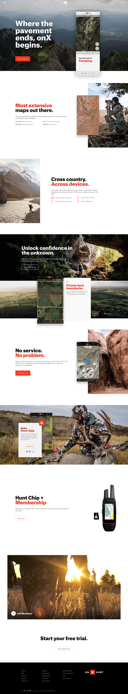
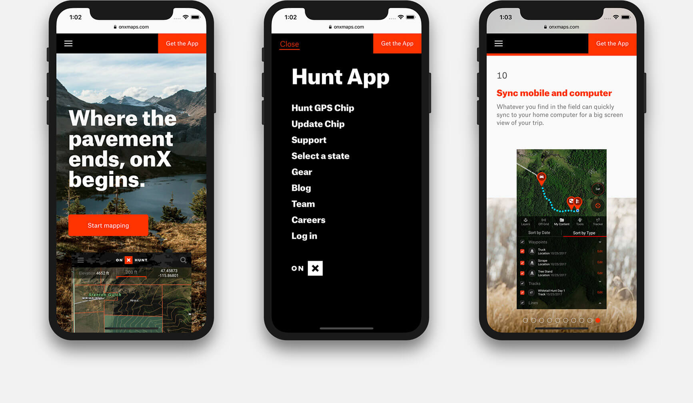
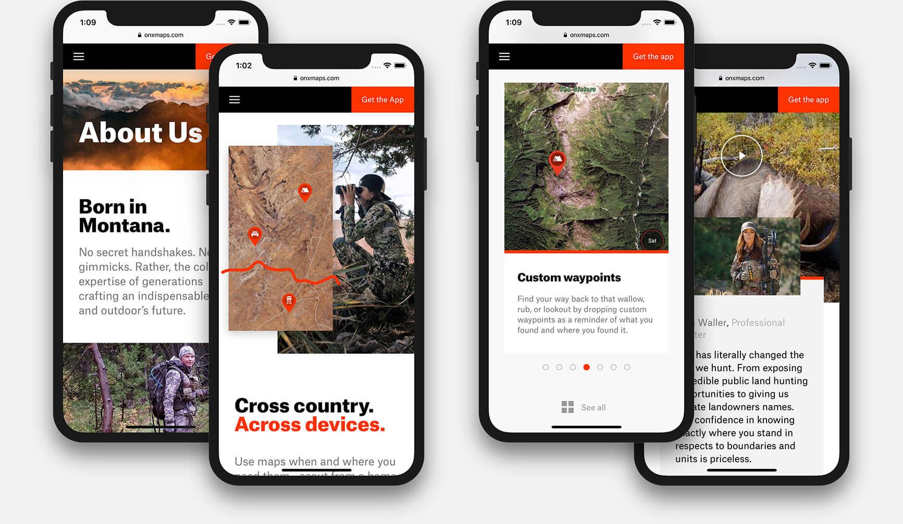

The web and mobile apps can be used for hunting, hiking, fishing, backcountry, land boundaries, watersports, camping, and more.
The website presents an equal balance between supportive imagery, video, features, and information.
Video backgrounds, carousels, and informative overlays were developed to display the many uses of the onX app.



Three design agencies were involved with the rebrand, app redesign, and new website–all working in parallel to modernize the onX brand.
There are so many uses for the onX app. It provides great value to several different public service industries, sport activities, and professional uses. Such as law enforcement, hunting, snowboarding, off-roading, and real estate.
Like this project and want to chat about what we could do for you? Let's meet!